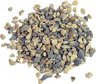
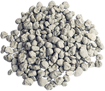
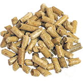
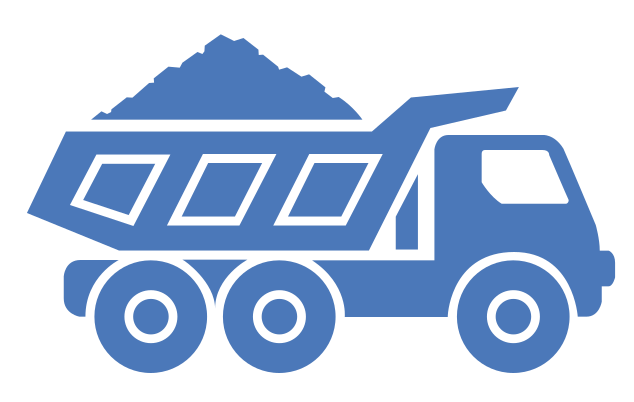

Сорбенты
Мы предлагаем 4 вида сорбентов

Опока
| Сорбент производится путем термической обработки опал - кристаболитовой породы опока по уникальной технологии НПК Сорбент. Сорбент обладает великолепными влаго - впитывающими свойствами, хорошо устраняет запахи, богато насыщен минералами. | Размер гранул: 0 – 0,7 мм 0,7 – 2 мм 2 – 4 мм 4 – 6 мм 6 – 10 мм | Применение: - наполнитель для туалетов домашни питомцев - промышленный сорбент - добавка к кормам животных и птиц - кондиционер для почвы |

Диатомит
| Сорбент производится путем термической обработки опал - кристаболитовой породы опока по уникальной технологии НПК Сорбент. Сорбент обладает великолепными влаго - впитывающими свойствами, хорошо устраняет запахи, богато насыщен минералами. | Размер гранул: 0 – 0,7 мм 0,7 – 2 мм 2 – 4 мм 4 – 6 мм 6 – 10 мм | Применение: - наполнитель для туалетов домашни питомцев - промышленный сорбент - добавка к кормам животных и птиц - кондиционер для почвы |

Силикагель
| Сорбент производится путем термической обработки опал - кристаболитовой породы опока по уникальной технологии НПК Сорбент. Сорбент обладает великолепными влаго - впитывающими свойствами, хорошо устраняет запахи, богато насыщен минералами. | Размер гранул: 0 – 0,7 мм 0,7 – 2 мм 2 – 4 мм 4 – 6 мм 6 – 10 мм | Применение: - наполнитель для туалетов домашни питомцев - промышленный сорбент - добавка к кормам животных и птиц - кондиционер для почвы |

Древесные Гранулы
| Сорбент производится путем термической обработки опал - кристаболитовой породы опока по уникальной технологии НПК Сорбент. Сорбент обладает великолепными влаго - впитывающими свойствами, хорошо устраняет запахи, богато насыщен минералами. | Размер гранул: 0 – 0,7 мм 0,7 – 2 мм 2 – 4 мм 4 – 6 мм 6 – 10 мм | Применение: - наполнитель для туалетов домашни питомцев - промышленный сорбент - добавка к кормам животных и птиц - кондиционер для почвы |
Применение
Наши сорбенты используются по следующим направлениям
Уход за домашними зивотными
НПК Сорбент более 15 лет разрабатывает, производит и реализует
гигиенические наполнители для туалетов домашних животных.
В линейке продукции наполнители на основе диатомита, опоки, силикагеля, а также
древесных гранул. Наполнители разработки "Сорбент" экологичны и гипоаллергенны.
Обладают уникальными влагопоглощающими и запаха устраняющими свойствами.
Подходят для различных пород питомцев.
Промышленные сорбенты
Данный класс сорбентов на основе опал-кристобалитовых пород используется
для локализации разливов нефтепродуктов, щелочей, кислот и других
жидкостей на любых твердых поверхностях. Сорбенты нашей
разработки химически инертны, не воспламеняются и имеют преимущества по
прочности и впитывающим свойствам перед традиционными средствами сбора
жидких веществ на производственных
Животноводство и птицеводство
Кормовые добавки на основе минеральных сорбентов позволяют выводить
вредные вещества из организмов птиц и животных, повышают иммунитет
и балансируют питание. Кроме того, они насыщены полезными
веществами, необходимыми для оптимального развития и функционирования
организмов. Обогащение рациона сорбентами в купе с правильным
режимом кормления повышают качество мяса и молока
 Растеневодство
Растеневодство
Добавление экологических сорбентов в почву позволяет создать идеальные условия для роста растений.
Сорбенты нашего производства поддерживают оптимальный уровень влаги в почве, сокращают необходимую
частоту поливов и нормализуют минеральный баланс почвы. Продукция одинаково применима как при
декоративном озеленении, так и при растениеводческой деятельности.
Наши преимущества
Работайте с нами. Это выгодно!
Собственное
производство
Контролируем качество на всех
этапах производства
Лучшая цена
Эффективные процессы - залог
низких цен
Порядочность
Честная работа и долгосрочные
деловые отношения
Собственный автопарк
Осуществляем доставку точно
и в срок

Надежность
Более 15 лет на рынке

Качественное сырье
Первоклассное сырье -
продукция высшей пробы